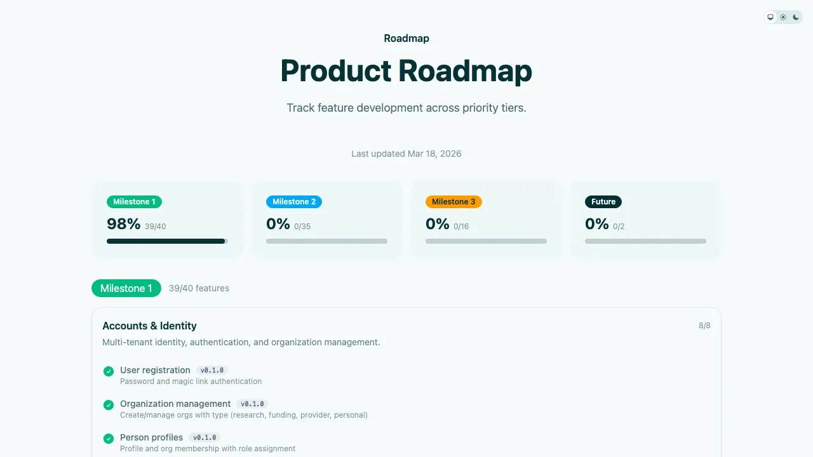
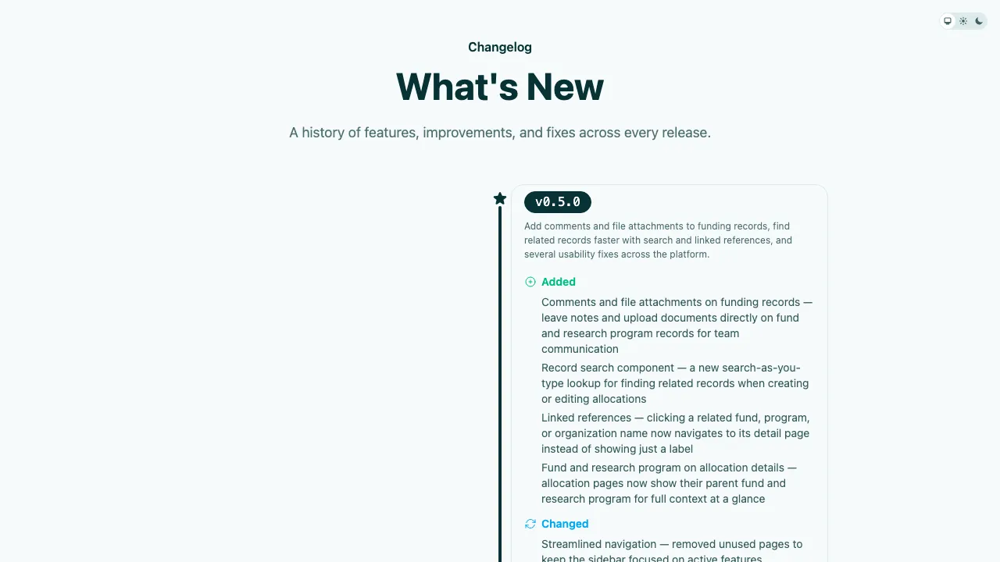

What You Get
Real screenshots of working applications built on the framework. Not mockups.

Detail pages with highlights, field sections, and relationship tabs — generated from declarative resource definitions.

Searchable, sortable, paginated tables — built-in from day one, not hand-wired per resource.

Card views for visual browsing — toggle between table and card layouts per resource.

Kanban boards for state machine resources — automatic from any resource with a status workflow.

Forms with searchable lookups, enum selects, and validation — introspected from resource definitions.

File attachments with drag-and-drop uploads, thumbnails, and lightbox — on any resource via one DSL line.

Comments with @mentions and real-time collaboration — on any resource, no custom code required.

Automatic audit trail with field-level diffs — every change tracked, no code required.

State machine actions with permission-aware buttons — declare transitions, the UI handles the rest.

In-app notifications with mention alerts — convention-driven, not hand-built per feature.

Built-in product roadmap with milestone tracking — communicate progress to stakeholders without a separate tool.

Versioned changelog with categorized release notes — every feature, improvement, and fix documented automatically.
Built into every application — what you'd normally hand-build: